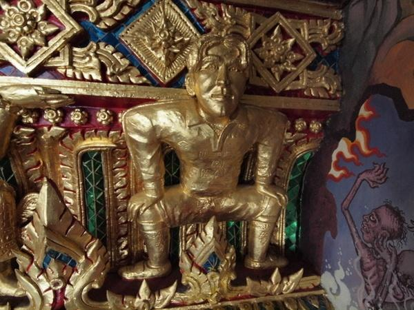
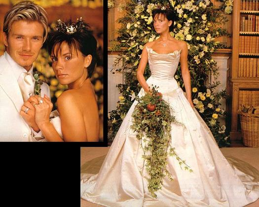

Chương Chín

hời điểm 1999, David là cầu thủ có thu nhập cao thứ nhì trên thế giới, kiếm khoảng ba triệu bảng một năm, chỉ đứng sau Ronaldo. Thế nhưng, xét về ảnh hưởng, anh vượt xa tiền đạo người Brazil. Chỉ cần David ăn mặc lạ lùng một chút, chẳng hạn như quấn chiếc xà rông, ngay lập tức hình ảnh đó sẽ lan truyền khắp toàn cầu. Và khi người ta khám phá ra chiếc xà rông là của hãng Gaultier, các cửa tiệm Gaultier liền cháy hàng. Sau này, khi David để tóc theo kiểu Mohican, người hâm mộ khắp nơi, từ Âu sang Á, đồng loạt bắt chước. Ở Nhật, tóc Mohican được bình chọn là xu hướng thịnh hành nhất trong năm, còn tại Úc, phụ nữ không những cạo đầu, mà còn đổ xô cạo…lông mu kiểu Mohican nữa! Hình ảnh David xuất hiện trên các tạp chí thời trang và lối sống hàng đầu. Anh liên tục được trao các danh hiệu như: Người Ăn Mặc Đẹp Nhất, Người Đàn Ông Hấp Dẫn Nhất, thậm chí là…Thần Tượng Của Giới Gay. Fan hâm mộ Thái Lan đúc tượng vàng David, đặt vào điện thờ một ngôi chùa ở Bangkok. Người Ấn Độ thì vẽ tranh thánh hóa cặp Posh-Becks, thể hiện David dưới dạng thượng linh thần Shiva, Victoria dưới dạng linh sơn thần nữ Parvati.

Tượng vàng Beckham trong chùa Bangkok (Ảnh: Revtravel)
Cái tên Beckham là bảo chứng cho sự thành công. Mỗi năm, trong số lượng áo đấu Manchester United bán được trên toàn cầu, một nửa là áo số 7 của Beckham. Sau hợp đồng quảng cáo với David, doanh thu hãng dưỡng tóc Brylcreem tăng vọt 50%. Những công ty lớn thay nhau nhảy vào ký hợp đồng cùng anh: Nước ngọt Pepsi, hàng không Hà Lan KLM, xăng dầu Castrol, bánh kẹo Meiji, viễn thông Vodafone, và kính râm Police.
Trên đỉnh cao danh vọng, David và Victoria chuẩn bị lễ thành hôn. Hai người cùng ý tưởng tổ chức một hôn lễ theo phong cách cổ tích thần tiên, có táo đỏ của Bạch Tuyết, có công chúa đeo vương miện vàng, và đương nhiên, có bạch mã hoàng tử. Địa điểm được chọn là lâu đài Luttrellstown, Ireland. Trong khuôn viên lâu đài có một ngôi đền cổ kính, rêu phong, mang vết tích “dấu xưa…hồn thu thảo”[1]. Đôi tình nhân sẽ đọc lời thề ước tại đây, thay vì đến nhà thờ.
Đêm trước hôn lễ, David đi đi lại lại trong phòng, luyện đọc “diễn văn”. Chỉ là một bài nói ngắn cảm ơn quan khách, song vì hồi hộp, anh chẳng biết phải nói những gì, nói sao cho hay. Rốt cuộc, David phải gọi cho nhà tổ chức hôn lễ Peregrine Armstrong-Jones, nhờ giúp một tay. Armstrong-Jones phải lóc cóc đến gặp thân chủ, dù đồng hồ đã chỉ…2 giờ sáng. Tập mãi, chỉnh mãi mới xong.
Sáng hôm sau, David tỉnh giấc, nghe tiếng rì rầm bên phòng phù rể Gary Neville. Quái, thằng này nói chuyện với ai? Lâu đài này tường đá dầy cui, sóng di động làm gì vào được? Thấy lạ, anh mở hé cửa phòng bên cạnh, nhìn vào. Té ra Neville cũng đang tập diễn văn, đứng tạo dáng trước gương, tay cầm chai thuốc xịt khử mùi giả làm micro. Phù rể còn chuẩn bị kỹ càng hơn chú rể nữa! David phá lên cười, Neville nhìn ra, cũng khì khì cười theo.
Ngày 4 tháng 7 năm 1999, 340 quan khách lục tục kéo về Luttrellstown, trong đó không thể thiếu các thành viên Spice Girls: Emma Bunton, Mel B, và Mel C. Các đồng đội của David ở Manchester, Sir Bobby Charlton, David Seaman…cũng đều có mặt. Trả một triệu bảng chỉ để độc quyền đưa tin về đám cưới, tạp chí OK! thiết lập một hệ thống an ninh dày đặc bao quanh lâu đài, vừa để bảo vệ quan khách, vừa đề phòng các báo khác săn tin trộm. Trên trời, trực thăng quần đảo, bay tới bay lui. Dưới đất, ai muốn vào sảnh cưới, phải qua ba lớp hàng rào cảnh vệ. Không thể không cẩn thận như thế, bởi paparazzi rình rập khắp nơi, kẻ trốn trong bụi cây, người dầm mình dưới hào nước, chỉ chờ một sơ hở để đột nhập.
Bên cạnh đội ngũ an ninh hùng hậu, hơn 400 nhân viên phục vụ tất tả đi lại, chuẩn bị các thứ. Quan khách đi dưới những vòm hoa, bước vào sảnh cưới. Bên trong sảnh, bốn bề trang trí lá cỏ xanh rì, điểm xuyết bằng hoa vàng và táo đỏ. Nến và bạch lạp lung linh tỏa sáng khắp nơi, giữa những âm điệu vui tươi của dàn đại nhạc. Đa số khách đều nghỉ tại sảnh, chỉ những người thân nhất mới được mời dự lễ trao thề.
Cô dâu hôm ấy mặc áo sa tanh trắng, đội miện vàng khảm kim cương, cổ đeo thánh giá cũng bằng kim cương, còn chú rể diện bộ vest trắng lịch lãm. Đón chờ họ nơi ngôi đền cổ là giám mục xứ Cork, trong trang phục đại lễ màu tím[2]. Ngôi đền trông thật huyền ảo trong ánh đèn mờ nhấp nháy, giả làm ánh sao, với những đóa hồng nhung xung quanh tỏa hương nồng, và những dây thường xuân chạy dài trên nền tường rêu phủ. Hòa cùng nhịp bước đôi tân lang tân nương, là tiếng róc rách của ngọn tiểu khê, cùng âm thanh thánh thót du dương của vĩ cầm và đàn hạc.
“Thiên Chúa toàn năng, Người ban sự sống và tình yêu”, đức giám mục cầu nguyện, “Xin ban phúc lành cho Victoria và David, hai trẻ hôm nay Người đã tác thành.”
Hai vợ chồng cùng khóc khi nói lời thề và trao nhẫn cho nhau. Nhẫn David trao Victoria làm bằng vàng, mặt kim cương hình bầu dục, được nâng đỡ hai bên bởi hai hạt kim cương dạng chữ nhật. Nhẫn Victoria trao David là nhẫn vĩnh cữu, bằng vàng nạm 48 hạt kim cương nhỏ. Ngoài nhẫn, David còn tặng vợ bộ hoa tai hột xoàn, kèm vòng bụng vàng, còn Victoria tặng chồng đồng hồ thượng hạng Thụy Sỹ hiệu Breguet.
Lễ xong, mọi người trở về sảnh cưới dùng tiệc tối. Cha cô dâu đứng ra phát biểu vài lời, rồi đến chú rể, và phù rể Gary Neville. Tiệc tan, quan khách lại cùng nhau bước sang một sảnh khác để khiêu vũ. Sảnh này trang trí theo lối Morocco, với những tượng người vàng đỡ các chậu hoa sặc sỡ. David và Victoria, bấy giờ đã chuyển sang mặc trang phục màu tím thủy chung, bước ra nhảy điệu đầu tiên. Lúc đồng hồ vừa đổ chuông nửa đêm, pháo hoa đồng loạt nổ tung trên bầu trời…
Từ giã đời độc thân, David tự thưởng cho mình chiếc Aston Martin giá 92 000 bảng, thêm vào bộ sưu tập xe hơi vốn đã bao gồm những hiệu danh tiếng như Ferrari và Range Rover. Sang hơn nữa, anh bỏ ra 2.5 triệu bảng tậu một biệt thự nguy nga có chín phòng ngủ, đài phun nước, và hồ bơi riêng[3]. Báo giới gọi ngôi biệt thự ở Hertfordshire, gần London, là Beckingham Palace, ngụ ý so sánh nhà Beckham với cung điện Buckingham của hoàng gia Anh Quốc.
Sir Alex Ferguson ngán ngẩm. Hồi mới đám cưới, David xin nghỉ phép thêm ba ngày để đi tuần trăng mật ở Ấn Độ Dương, Sir đã từ chối ngay: Cưới là cưới, công việc là công việc. David nghe lời thầy, chuyển sang trăng mật ở Pháp, khiến Sir tạm hài lòng, thế mà giờ đây lại nảy ra cái chuyện mua nhà. Chơi bóng ở Manchester, mà mua nhà London là nghĩa làm sao? Chẳng lẽ cứ chạy đi chạy lại giữa hai nơi? Những khi không đá, không tập thì phải nghỉ ngơi, dưỡng sức, suốt ngày chạy như con thoi thì thể lực sao bảo đảm? Đó là chưa nói chuyện David thường xuyên đi làm mẫu chụp ảnh, đóng quảng cáo, dự các show thời trang. Trong mắt Sir Alex, David đang dần dần trở nên lớn hơn cả đội bóng, điều ông không bao giờ cho phép. Đã tính đến việc đổi David lấy Luis Figo của Barcelona, nhưng Sir lại thôi, vì nghĩ đến tình thầy trò bao nhiêu năm, và không muốn phá vỡ đội hình vừa giành cú ăn ba.
Lúc này, David chưa phải lo lắng về mối quan hệ với Sir Alex, mà lo nhiều hơn cho vợ con. Độ tháng 10, 1999, đang tập trung cùng đội tuyển Anh thi đấu vòng loại Euro 2000, anh nhận được tin bọn xấu đang âm mưu bắt cóc Victoria và Brooklyn. Bấn loạn, David vội đến tìm Kevin Keegan, người kế nhiệm Glenn Hoddle dẫn dắt Tam Sư. Nghe anh lắp bắp trình bày sự tình, Keegan nhẹ nhàng trấn an:
-David, tôi cũng từng rơi vào hoàn cảnh giống vậy. Hồi đá thuê bên Đức, người ta cũng dọa giết vợ chồng tôi. Tôi hiểu tâm trạng cậu. Điều cần làm bây giờ là về với vợ con. Tôi sẽ cùng đi với cậu, chúng ta sẽ cùng giải quyết vấn đề.
Đã 10 giờ đêm, nhưng Keegan không nề hà chi, ông gọi thêm nhân viên phụ trách an ninh cho đội tuyển Anh, 3 người cùng lên xe đi đón mẹ con Victoria. Đến nơi, lúc vợ chồng học trò đang hoảng loạn không biết tính sao, ông thầy như vị tướng giữa trận tiền, đứng ra chỉ huy hết các việc:
-Nào, nơi an toàn nhất bây giờ là khách sạn của ĐTQG. Chỗ đó an ninh tận răng, không có phép thì nội bất xuất ngoại bất nhập. Bế Brooklyn lên, sửa soạn đồ đạc đi.
Thế là dù đang trong kỳ tập trung, David được ưu tiên ngủ cùng vợ con trong khách sạn. Sáng hôm sau, Keegan nói chuyện riêng với anh, cho phép anh chọn ra sân hay không trong trận gặp Luxembourg sắp tới. David chọn ra sân, Anh dễ dàng đè bẹp đối thủ 6 – 0. Vậy nhưng, trận với Ba Lan 4 ngày sau đó mới là vấn đề, bởi Anh sẽ phải thi đấu trên sân đối phương. Brooklyn còn nhỏ quá, dắt theo sang Ba Lan thì không tiện, mà bỏ vợ con ở nhà thì David không yên tâm. Keevin Keegan lại cho David chọn quyền đi hay ở.
-Em và con không sao đâu – Victoria động viên chồng – Bên cạnh đã có người bảo vệ rồi mà. Đây là nghĩa vụ của anh. Vì quốc gia, anh phải đi.
Cuối cùng, David đi Ba Lan một mình. Ở nhà, âm mưu bắt cóc cũng bị phá vỡ[4]. Từ đó trở đi, nhà Beckham luôn cẩn trọng về mặt an ninh. Hai vợ chồng cho lắp đặt tại gia hệ thống báo động tối tân bậc nhất, và mỗi khi đi ra ngoài luôn dắt theo vệ sỹ. Qua biến cố xảy ra, David cảm kích chân tình của Kevin Keegan, ngày càng thân với ông hơn. Anh nhận định: Nếu như Tam Sư sở hữu một HLV nào đó có cả chuyên môn của Glenn Hoddle và tài đối nhân xử thế của Kevin Keegan, việc đội giành World Cup không phải ước mơ xa vời.

David và Victoria ngày thành hôn (Ảnh: Persun)
Chú thích:
[1] Thơ Thăng Long Thành Hoài Cổ của bà Thanh Quan.
[2] Giám mục xứ Cork là CĐV của Manchester United. Sau khi chủ trì hôn lễ này, ngài bị đặt cho biệt danh là…Purple Spice.
[3] Sau này, David còn xây trong khuôn viên biệt thự một phòng thu âm tối tân tặng riêng cho Victoria, để mỗi khi thu đĩa, vợ khỏi phải ra ngoài; một lâu đài theo kiểu trung cổ, một sân golf, và một mê cung tình yêu. Anh thuê vợ chồng Giles-Larkin, trước đây từng phục vụ Hoàng Thái Hậu Anh Quốc, làm quản gia.
[4] Sau này, vợ con David còn bị đe dọa thêm vài lần nữa. Đình đám nhất là vụ tháng 11 năm 2002: 5 người bị bắt vì mưu toan bắt cóc Victoria lấy 5 triệu bảng.